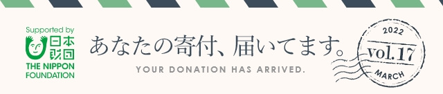
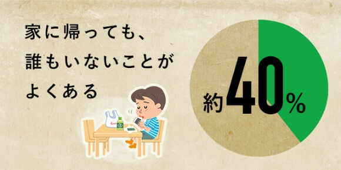
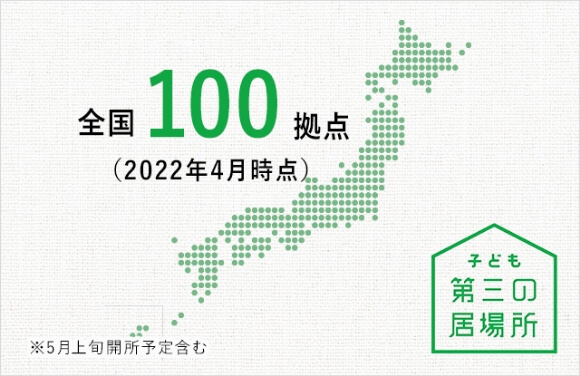

 |
|
|
【福島沖地震】被災地に復興のバトンを渡す、災害ボランティアの現場
2022年3月16日23時36分頃。福島県沖を震源としたM7.4の地震が発生しました。3.11の震災と同じ時期、近隣エリアとあって、東日本大震災の記憶が呼び起こされた方も多いかもしれません。
一方、今回の震災は津波の影響が少なかったこともあり、被害状況がメディアで報道される機会が多くありません。しかし、震災は確実に被災地に爪痕を残しています。 最大震度6強を記録した福島県南相馬市の現在の状況と災害ボランティアの様子をお伝えします。 |
|
ニッポンの子どもは恵まれているって、ホント？
|
|  |
|
出典：「今どきの子どもの放課後事情」のアンケート 2017.2 FELISSIMO 公開資料より
子ども第三の居場所ってなんだ？
日本財団はそんな子どもたちが安心して過ごせる場所、そして社会を生き抜く力を身につける場所として「子ども第三の居場所」を展開しています。
|
|  |
|
＼子ども第三の居場所についてはコチラ／
https://www.nippon-foundation.or.jp/what/projects/child-third-place |
|
|
日本では温かな春を迎える一方で、今現在も困難に直面している方々が多くいらっしゃいます。日本財団は、ウクライナから日本への避難民の方々、また現地の障害者・ボランティア派遣等の支援を開始致しました。2022年度も現場に寄り添った支援を行ってまいります。
引き続きご支援・ご協力の程よろしくお願いいたします。 ファンドレイジングチーム 川部
|
|
この「日本財団メルマガ」は、日本財団へご寄付をいただいた方々に配信しております。
メールマガジンの配信解除・宛先変更は下記までメールにてお送りをいただきたくお願いいたします。 日本財団ドネーション事業部
メール：kifu@ps.nippon-foundation.or.jp TEL：0120-533-236（平日9時～17時） 公式HP：http://www.nippon-foundation.or.jp/ |
|